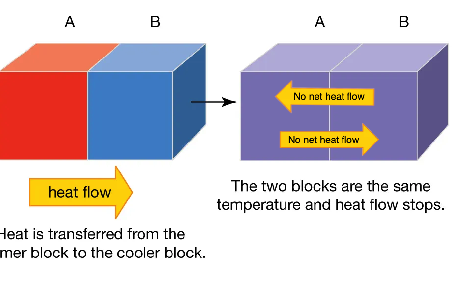
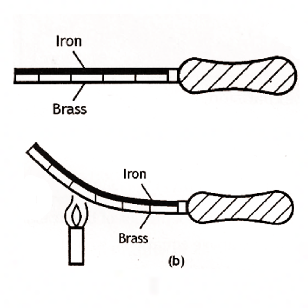

Back to main page
Chapter 10
Transfer of Thermal Energy and Its Effects
Temperature
Definition: the measure of how hot or how
cold an object is.
SI Unit: Kelvin (K)
* common unit: Celsius (ºC)
Temperature and Heat
Differences between temperature and heat
|
Temperature |
Heat |
| Definition |
Measure of how hot or cold an object is. |
Amount of thermal energy transferred from a hotter to
colder region |
| SI Unit |
Kelvin (K) |
Joule (J) |
Heat flow

When both objects are at the same temperature, they are at thermal
equilibrium.
Effects of heat on matter
- Expansion
- increase of volume in objects
- when objects gain heat
- Contraction
- the decrease in volume of objects
- when objects lose heat
All this applies to solids, liquids and gases
|
Expansion
|
Contraction
|
Volume
|
Increase in volume
|
Decrease in volume
|
Mass
|
Mass remains constant
|
Density
|
Density decreases
|
Density increases
|
Expansion and contraction in solids
- rail tracks have periodic gaps to allow for expansion to prevent twisting in hot weather
- bridges have expansion joints and rollers underneath to allow expansion and contraction
Expansion and contraction in liquids and gases

Applications of expansion and contraction
Opening a jar
- immerse lid of jar in warm water for a few minutes.
- this allows the metal lid to expand faster and more than the glass jar
- this loosens the lid and allows us to unscrew it easil
Bi-metallic strip

- made of 2 metals expanding at different rates upon the same change in temperature
- brass expands more than iron
Thermostat / Fire alarm
- bi-metallic strip contracts unevenly and bends
- when the bimetallic strip bends, it switches off the cooling unit.
- refrigerator becomes warm
- the bimetallic strip becomes straight
- switches on the cooling unit
- this switches the refrigerator off when it is too cold, and switches it back on when it warms back up
- this controls the refrigerator's cooling unit to keep temperature constant
Fire alarm
- fire --> temperature rises
- causes the bimetallic strip to expand unevenly
- causes [bi-metallic strip] to bend towards the contact
- this causes the circuit to be closed
- this allows the fire alarm to be switched on.
Other uses of a bimetallic strip
- electric iron
- thermometer
- liquid-in-glass/mercury thermometers
- hot air balloon
Transfer of thermal energy
(Recap) – HEAT ALWAYS FLOW FROM A REGION OF HIGHER TEMPERATURE TO LOWER TEMPERATURE
Conduction
Definition: the transfer of thermal energy through a medium without any flow of the medium

Non-metal objects
- particles at the heated end vibrate vigorously about in their fixed positions
- these particles collide with neighbouring particles, making them (both) vibrate more vigorously, and transfer kinetic energy
- thermal energy is transferred with no transfer of particles (?)
- eventually, the particles at the cooler end are also set into vigorous vibration and become hot.
Metallic objects
- metals conduct thermal energy more quickly due to the presence of free electrons
- In metals, there are 2 ways to transfer thermal energy:
- vibration and collision of particles (also for non-metal)
- free electron diffusion
-
at the heated end, free electrons absorb heat and gain kinetic energy
- these move at greater speeds, towards the cooler regions
- hotter free electrons collide with atoms in the cooler parts, making them vibrate more vigorously
- eventually, the particles at the cooler end are also set into vigorous vibration and become hot.
Conduction (liquids & gases)
- liquids are poor conductors of heat.
- gases are even worse conductors of heat
- the particles of liquids and gases are spread further apart, hence transmission of energy via molecular vibrations is not as effective
Vacuums
- for all conduction of heat, a material medium is needed
- vacuums cannot conduct heat as there is no matter in vacuums
Good and poor conductors of heat
Good conductors
|
Poor conductors
|
aluminium
|
liquids, gases
|
iron
|
wood
|
steel
|
plastic
|
diamond
|
glass
|
Convection
Definition: the transfer of thermal energy by the means of convection currents in a fluid due to a difference in density